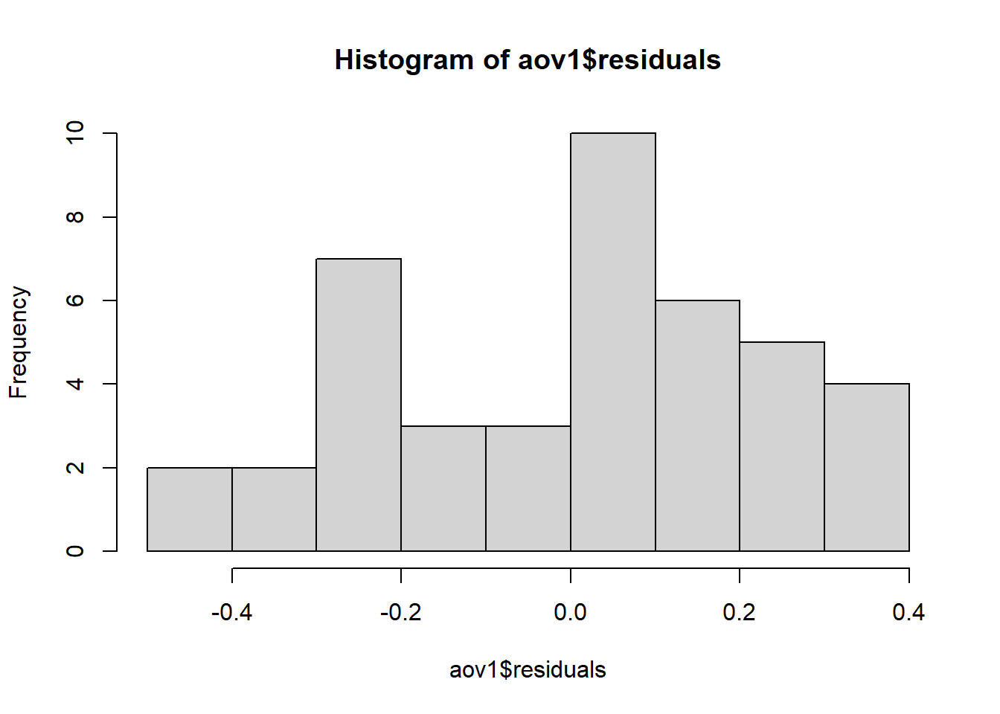

Quando se trabalha com 2 tratamentos, os passos para seguir são: Teste de normalidade - shapiro.test, seguido de var.test, que se o p-valor der menor que 0,05 realiza testes não paramétricos (Mann-Whitney e Wilcoxon). Caso o p-vallor seja maior que 0,05, realiza-se o t.test —-> var.equal = F.
Anova com 1 fator
Pergunta a ser resposndida: Há efeito da espécie no crescimento micelial?
library(readxl)library(tidyverse)
Warning: package 'ggplot2' was built under R version 4.2.3
── Attaching core tidyverse packages ──────────────────────── tidyverse 2.0.0 ──
✔ dplyr 1.1.0 ✔ readr 2.1.4
✔ forcats 1.0.0 ✔ stringr 1.5.0
✔ ggplot2 3.4.2 ✔ tibble 3.1.8
✔ lubridate 1.9.2 ✔ tidyr 1.3.0
✔ purrr 1.0.1
── Conflicts ────────────────────────────────────────── tidyverse_conflicts() ──
✖ dplyr::filter() masks stats::filter()
✖ dplyr::lag() masks stats::lag()
ℹ Use the conflicted package (<http://conflicted.r-lib.org/>) to force all conflicts to become errors
Cria um novo modelo para atribuir a função aov() contendo os argumentos (tcm em função de espécie). Depois disso, resume o novo modelo criado com a função summary.
aov1 <-aov(tcm ~ especie, data = micelial)summary(aov1)
Df Sum Sq Mean Sq F value Pr(>F)
especie 4 0.4692 0.11729 1.983 0.117
Residuals 37 2.1885 0.05915
Conclusão: Nesse conjunto de dados, não há diferença na media micelial (não há efeito significativo da espécie sobre o cresc. micelial).
Testando as premissas
Depois de fazer a anova, testa-se as premissas. É mais importante os dados serem homogeneos do que normais. Testando as premissas da anova - de normalidade e homocedasticidade do modelo: Para testar as premissas, é necessário instalar e carregar o pacote performance e o pacote DHARMa. O pacote performance permite checar as premissas (check_), já o pacote DHARMA ((Distributed Hierarchical Accumulation of Residuals for Generalized Linear Models in R) é para visualizar os dados pelo diagnóstico do resíduo (O pacote DHARMa permite faz uma comparação dos resíduos simulados, que são gerados pelo pacote, com os resíduos observados) e ver graficamente quando a distribuição dos dados não é normal e/ou quando há variação heterocedástica.
library(performance)
Warning: package 'performance' was built under R version 4.2.3
check_heteroscedasticity(aov1)
OK: Error variance appears to be homoscedastic (p = 0.175).
check_normality(aov1)
OK: residuals appear as normally distributed (p = 0.074).
library(DHARMa)
Warning: package 'DHARMa' was built under R version 4.2.3
This is DHARMa 0.4.6. For overview type '?DHARMa'. For recent changes, type news(package = 'DHARMa')
hist (aov1$residuals)

qqnorm(aov1$residuals)qqline(aov1$residuals)
plot(simulateResiduals(aov1))
Warning in checkModel(fittedModel): DHARMa: fittedModel not in class of
supported models. Absolutely no guarantee that this will work!
shapiro.test(aov1$residuals)
Shapiro-Wilk normality test
data: aov1$residuals
W = 0.95101, p-value = 0.07022
Novo conjunto de dados - Dados não paramétricos
Abrir um conjunto de dados que está no R chamado InsectSprays.
Rodando o modelo de anova: como os dados, aparentemente - pelo visual do gráfico - apresentaram-se não paramétricos, roda-se a anova e testa-se as premissas para confirmação.
aov2 <-aov(count ~ spray, data = insects)summary(aov2)
Df Sum Sq Mean Sq F value Pr(>F)
spray 5 2669 533.8 34.7 <2e-16 ***
Residuals 66 1015 15.4
---
Signif. codes: 0 '***' 0.001 '**' 0.01 '*' 0.05 '.' 0.1 ' ' 1
check_normality(aov2)
Warning: Non-normality of residuals detected (p = 0.022).
Interpretação: dados não são normais e homogeneos.
Alternativas para dados não paramétricos:
Quando se tem dados não paramétricos, tem-se 3 alternativas - transformar os dados (raiz quadrada, log, etc); usar testes não paramétricos (Kruskal) ou usar modelos lineares generalizados (melhor opção).
Transformar os dados para normalizar: Usa-se a raiz quadrada para tentar noprmalizar e tornar os dados normais e homogenos. Pode-se também tentar o log da variável resposta + 0.5.
aov2 <-aov(sqrt(count) ~ spray, data = insects)summary(aov2)
Df Sum Sq Mean Sq F value Pr(>F)
spray 5 88.44 17.688 44.8 <2e-16 ***
Residuals 66 26.06 0.395
---
Signif. codes: 0 '***' 0.001 '**' 0.01 '*' 0.05 '.' 0.1 ' ' 1
check_normality(aov2)
OK: residuals appear as normally distributed (p = 0.681).
check_heteroscedasticity(aov2)
OK: Error variance appears to be homoscedastic (p = 0.854).
Se não normalizar e os dados ainda forem heterogenos, usa-se testes não paramétricos. Tem 2 opções de teste Kruskal. Para usar essa opção, é necessário baixar e carregar o pacote agricolae.
kruskal.test(count ~ spray, data = insects)
Kruskal-Wallis rank sum test
data: count by spray
Kruskal-Wallis chi-squared = 54.691, df = 5, p-value = 1.511e-10
library(agricolae)
Warning: package 'agricolae' was built under R version 4.2.3
Study: insects$count ~ insects$spray
Kruskal-Wallis test's
Ties or no Ties
Critical Value: 54.69134
Degrees of freedom: 5
Pvalue Chisq : 1.510845e-10
insects$spray, means of the ranks
insects.count r
A 52.16667 12
B 54.83333 12
C 11.45833 12
D 25.58333 12
E 19.33333 12
F 55.62500 12
Post Hoc Analysis
t-Student: 1.996564
Alpha : 0.05
Minimum Significant Difference: 8.462804
Treatments with the same letter are not significantly different.
insects$count groups
F 55.62500 a
B 54.83333 a
A 52.16667 a
D 25.58333 b
E 19.33333 bc
C 11.45833 c
Pacote emmeans
O pacote emmeans (“estimated marginal means”, ou médias marginais estimadas) é usado para realizar testes de comparação de médias entre grupos, ajustando para outros fatores importantes que podem influenciar as médias. O pacote é particularmente útil em modelos lineares generalizados (GLM).
Função emmeans - tirar a média da variável inseticida: Para dar o valor original da média e não o valor transformado, usa-se a função type = response. A função pwpm gera uma tabela de comparação das médias e cld é uma função que serve para gerar os números que diferenciam os grupos de médias.
aov2 <-aov(count ~ spray, data = insects)summary(aov2)
Df Sum Sq Mean Sq F value Pr(>F)
spray 5 2669 533.8 34.7 <2e-16 ***
Residuals 66 1015 15.4
---
Signif. codes: 0 '***' 0.001 '**' 0.01 '*' 0.05 '.' 0.1 ' ' 1
check_normality(aov2)
Warning: Non-normality of residuals detected (p = 0.022).
spray emmean SE df lower.CL upper.CL
A 14.50 1.13 66 12.240 16.76
B 15.33 1.13 66 13.073 17.59
C 2.08 1.13 66 -0.177 4.34
D 4.92 1.13 66 2.656 7.18
E 3.50 1.13 66 1.240 5.76
F 16.67 1.13 66 14.406 18.93
Confidence level used: 0.95
pwpm(aov2_means)
A B C D E F
A [14.50] 0.9952 <.0001 <.0001 <.0001 0.7542
B -0.833 [15.33] <.0001 <.0001 <.0001 0.9603
C 12.417 13.250 [ 2.08] 0.4921 0.9489 <.0001
D 9.583 10.417 -2.833 [ 4.92] 0.9489 <.0001
E 11.000 11.833 -1.417 1.417 [ 3.50] <.0001
F -2.167 -1.333 -14.583 -11.750 -13.167 [16.67]
Row and column labels: spray
Upper triangle: P values adjust = "tukey"
Diagonal: [Estimates] (emmean) type = "response"
Lower triangle: Comparisons (estimate) earlier vs. later
library(multcomp)
Warning: package 'multcomp' was built under R version 4.2.3
Carregando pacotes exigidos: mvtnorm
Carregando pacotes exigidos: survival
Carregando pacotes exigidos: TH.data
Warning: package 'TH.data' was built under R version 4.2.3
Carregando pacotes exigidos: MASS
Attaching package: 'MASS'
The following object is masked from 'package:dplyr':
select
Attaching package: 'TH.data'
The following object is masked from 'package:MASS':
geyser
library(multcompView)
Warning: package 'multcompView' was built under R version 4.2.3
cld(aov2_means)
spray emmean SE df lower.CL upper.CL .group
C 2.08 1.13 66 -0.177 4.34 1
E 3.50 1.13 66 1.240 5.76 1
D 4.92 1.13 66 2.656 7.18 1
A 14.50 1.13 66 12.240 16.76 2
B 15.33 1.13 66 13.073 17.59 2
F 16.67 1.13 66 14.406 18.93 2
Confidence level used: 0.95
P value adjustment: tukey method for comparing a family of 6 estimates
significance level used: alpha = 0.05
NOTE: If two or more means share the same grouping symbol,
then we cannot show them to be different.
But we also did not show them to be the same.
GLM A terceira opção é a geração de modelos lineares generalizados. Para publicação de artigos, essa é a opção mais aconselhável, é mais elegante do que transformar os dados. Para visualizar, pode usar o pacote Dharma e puxar um plot.
spray emmean SE df asymp.LCL asymp.UCL .group
C 2.08 0.417 Inf 1.27 2.90 1
E 3.50 0.540 Inf 2.44 4.56 12
D 4.92 0.640 Inf 3.66 6.17 2
A 14.50 1.099 Inf 12.35 16.65 3
B 15.33 1.130 Inf 13.12 17.55 3
F 16.67 1.179 Inf 14.36 18.98 3
Confidence level used: 0.95
P value adjustment: tukey method for comparing a family of 6 estimates
significance level used: alpha = 0.05
NOTE: If two or more means share the same grouping symbol,
then we cannot show them to be different.
But we also did not show them to be the same.